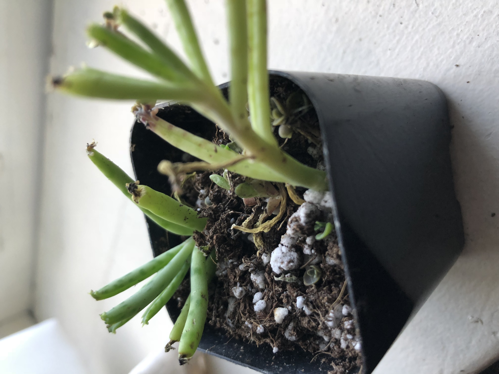

I'm a sophomore studying Computer Science at Cornell University. My interests are in User Experience/User Design, Programming, and Web Design. Oh yeah, I'm also a big fan of horticulture! This is one of my many plants, Eric:
Recently, I've become more involved in an organization called Prisoner Express. The aim of this organization is to help prisoners by providing resources such as books, newsletters, lesson plans, and general mailings. It's an organization that I've found myself enjoying being a part of and one where I definitely plan on sticking through to the end.
I also have some plans in the works to teach/co-teach a class at the local middle school in Ithaca. It will either be on scratch based programming or something related to Anthropology.
This simple alexa skill gives you information about the next bus heading to your destination without having to unlock your phone and launch an app. Simply ask alexa when the next bus to {destination} is from {origin} and alexa will tell you if theres anything available. If there is, alexa notifies you that the next bus departs in X minutes from {bus_stop_location}. Inspiration for this app came from the fact that there have been many days I've been too lazy to check for the next bus on my iPhone. Instead, I created a script that would automate this task. Currently, I don't have any plans on continuing development of this project.